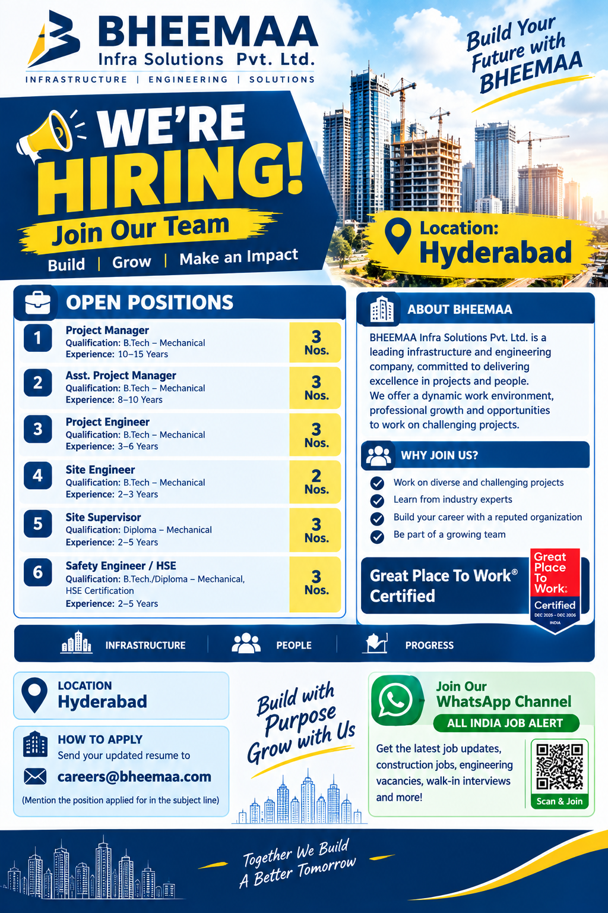

Multiple Mechanical Engineering Job Openings in Hyderabad – 2026

BHEEMAA Infra Solutions Pvt. Ltd. has announced multiple career opportunities for experienced Mechanical Engineering and HSE professionals in Hyderabad. The recruitment drive includes positions ranging from Project Manager and Assistant Project Manager to Project Engineer, Site Engineer, Site Supervisor and Safety Engineer/HSE. Candidates with the required educational qualifications, professional experience and relevant technical knowledge can apply for the respective positions.
These openings can be a good opportunity for professionals who are looking to build or advance their careers in project execution, site operations, mechanical engineering, supervision and workplace safety. Interested candidates should carefully check the eligibility criteria and experience requirements before submitting their updated resume.
BHEEMAA Infra Solutions Pvt. Ltd. is inviting applications from qualified professionals for multiple positions. The vacancies are primarily related to Mechanical Engineering, Project Management, Site Engineering, Supervision and Health & Safety functions.
Candidates should apply only for positions that match their qualification and professional experience. Applicants are advised to prepare an updated CV that clearly mentions their educational qualification, total years of experience, current designation, relevant project experience and contact information.
Qualification: B.Tech – Mechanical
Experience: 10–15 Years
Project Manager candidates will be responsible for managing project activities, coordinating teams, monitoring execution and ensuring that project objectives are achieved within the required standards and timelines. Candidates with strong project management and mechanical engineering experience can apply.
Qualification: B.Tech – Mechanical
Experience: 8–10 Years
The Assistant Project Manager position is suitable for experienced Mechanical Engineering professionals who have exposure to project coordination, execution, planning, site activities and team management. Applicants should have relevant experience in project environments.
Qualification: B.Tech – Mechanical
Experience: 3–6 Years
Project Engineer candidates should have practical knowledge of mechanical engineering and project execution. The role can involve coordination with site teams, contractors and other project departments while supporting technical and execution-related activities.
Qualification: B.Tech – Mechanical
Experience: 2–3 Years
Site Engineer candidates should be comfortable working in site-based environments and handling mechanical engineering responsibilities. Candidates with relevant construction, project or industrial site exposure may be considered according to the company's requirements.
Qualification: Diploma – Mechanical
Experience: 2–5 Years
The Site Supervisor role is suitable for Diploma Mechanical candidates having practical site experience. Candidates should be capable of coordinating site workers, monitoring daily activities and supporting project execution as required.
Qualification: B.Tech./Diploma – Mechanical + HSE Certification
Experience: 2–5 Years
Candidates applying for Safety Engineer/HSE positions should have relevant safety experience along with the required HSE certification. The role may involve monitoring workplace safety, implementing safety procedures, identifying risks and supporting safe project operations.
The recruitment is focused mainly on Mechanical Engineering professionals. Educational requirements vary according to the position. B.Tech Mechanical candidates are required for Project Manager, Assistant Project Manager, Project Engineer and Site Engineer positions, while Diploma Mechanical candidates can apply for the Site Supervisor position. Safety Engineer/HSE candidates require a B.Tech or Diploma qualification in Mechanical along with an HSE certification.
Experience requirements range from 2 years to 15 years depending on the position. Candidates should ensure that their CV accurately represents their professional experience. Relevant project, construction, industrial, mechanical or site experience should be clearly mentioned where applicable.
Hyderabad, Telangana
Candidates selected for these opportunities may be required to work at the company's project or site locations in Hyderabad. Applicants should be comfortable with the job location and the responsibilities associated with their selected position.
Interested and eligible candidates should prepare their latest updated resume and submit it to the recruitment email address provided by BHEEMAA Infra Solutions Pvt. Ltd.
While sending the application, candidates should mention the position applied for clearly in the email subject line. For example: "Application for Project Engineer" or "Application for Site Engineer".
Candidates should make sure that their CV contains their full name, mobile number, email address, educational qualification, total work experience, current or previous designation, relevant project experience and other important professional details.
Applicants are advised to send a professional and updated resume. The resume should preferably be easy to read and should highlight the candidate's mechanical engineering background and relevant experience. Candidates with project management experience should mention the projects handled, team responsibilities and major technical responsibilities.
Site Engineering and Site Supervisor applicants should mention their site exposure, project type, responsibilities and practical experience. Candidates applying for Safety Engineer/HSE positions should clearly mention their HSE certification and safety-related experience.
The advertised positions cover several levels of professional responsibility, from site supervision and engineering to project management and HSE. This gives experienced Mechanical Engineering professionals an opportunity to look for roles that match their existing career level.
Professionals with extensive experience may consider Project Manager or Assistant Project Manager positions, while candidates with mid-level experience can explore Project Engineer and Site Engineer opportunities. Diploma holders with practical site experience can consider the Site Supervisor position. Candidates with safety certifications and relevant experience can apply for the Safety Engineer/HSE opening.
Job seekers should always check the information supplied by the recruiting organization before accepting any employment offer. Salary, benefits, joining date, working hours, accommodation, transportation, employment terms and other conditions should be confirmed directly with the employer during the recruitment process.
Applicants should also be careful about recruitment fraud. Never make a payment to an unknown person claiming to guarantee a job. Genuine recruitment communication should be verified through the company's official contact details.
Get the latest job vacancies, construction jobs, engineering jobs, site jobs, walk-in interviews and recruitment updates.
Follow our WhatsApp Channel for regular job updates.
📲 JOIN WHATSAPP CHANNELBefore submitting your application, check the following points: your resume is updated, the correct position is mentioned, your educational qualification is clearly stated, your total experience is included, your contact number is active and your email address is correct. Safety Engineer/HSE applicants should also mention their relevant HSE certification.
Candidates should send their application only through the contact information provided above. Keep a copy of the submitted resume and application email for future reference. If the recruitment team contacts you, confirm the position, project location, employment terms and other important details before proceeding.
BHEEMAA Infra Solutions Pvt. Ltd. is presented in this recruitment announcement as the hiring organization for the listed Hyderabad opportunities. The openings